ВЕДОМСТВЕННЫЕ СТРОИТЕЛЬНЫЕ НОРМЫ
МЕЛИОРАТИВНЫЕ
СИСТЕМЫ
И СООРУЖЕНИЯ
ОРОСИТЕЛЬНЫЕ
СИСТЕМЫ
НА ПРОСАДОЧНЫХ ГРУНТАХ.
НОРМЫ ПРОЕКТИРОВАНИЯ
ВСН 33-2.2.06-86
МИНИСТЕРСТВО
МЕЛИОРАЦИИ И ВОДНОГО
ХОЗЯЙСТВА СССР
МОСКВА 1986
РАЗРАБОТАНЫ Союзгипроводхозом (к.т.н. С. С. Савватеев); ВНИИГиМом (д.т.н. А. А. Кириллов); МГМИ (к.т.н. Н. Н. Фролов, В. А. Сурин); Азербайджанским инженерно-строительным институтом (д.т.н. А. А. Мустафаев)
ВНЕСЕНЫ Союзводпроектом
ПОДГОТОВЛЕНЫ К УТВЕРЖДЕНИЮ Главным техническим управлением Минводхоза СССР (С. А. Савченко)
С введением в действие ВСН 33-2.2.06-86 «Мелиоративные системы и сооружения. Оросительные системы на просадочных грунтах. Нормы проектирования» утрачивают силу ВСН-II-23-75 «Инструкция по проектированию оросительных систем на просадочных грунтах».
|
Министерство мелиорации и водного хозяйства СССР (Минводхоз СССР) |
Ведомственные строительные нормы |
ВСН 33-2.2.06-86 |
|
Мелиоративные системы и сооружения. Оросительные системы на просадочных грунтах. Нормы проектирования |
Взамен ВСН-II-23-75 |
Настоящие ВСН устанавливают требования к проектированию оросительных систем на лессовых просадочных грунтах.
1.1. При проектировании оросительных систем и их сооружений обязательно соблюдение требований СНиП 2.01.07-85, СНиП 2.02.01-83, СНиП 2.02.02-85, СНиП 2.06.03-85, СНиП 2.06.05-84, СНиП 2.06.01-86, СНиП II-55-79, СНиП II-56-77.
|
Внесены В/О «Союзводпроект» |
Утверждены
приказом Министерства мелиорации и
водного хозяйства СССР |
Дата
введения в действие |
1.3. Настоящие «нормы» распространяются на проектирование и строительство оросительных систем и гидротехнических сооружений на лессовых просадочных грунтах с относительной просадочностью εsl ≥ 0,01.
1.4. При проектировании оросительных систем на просадочных грунтах следует использовать карты просадочности грунтов с районированием территории по мощности просадочных толщ и по величинам просадок; а также расчетные характеристики свойств грунтов: плотность грунта при природной влажности, плотность сухого грунта, плотность частиц грунта, природную влажность, влажность на границе текучести и на границе раскатывания, полную влагоемкость, число пластичности, показатель текучести, пористость (коэффициент пористости), коэффициент фильтрации в вертикальном и горизонтальном направлении, высоту капиллярного поднятия, удельное сцепление и угол внутреннего трения грунта при естественной влажности, при увлажнении (просадке) и длительно замоченного; сжимаемость и относительную просадочность в зависимости от давления, величины начального просадочного давления и начальной влажности, относительное сжатие при послепросадочной деформации. Схематическая карта распространения просадочных грунтов на территории СССР приведена в главе СНиП 2.01.01-82.
1.5. При освоения новых просадочных массивов для уточнения особенностей фильтрации, и развития деформаций следует, как правило, проводить натурные исследования с котлованами, отрезками каналов, модельными штампами на характерных участках оросительных систем и на площадках строительства крупных ответственных сооружений IV группы по табл. 2.
1.6. Определение свойств лессовых просадочных грунтов и обработка опытных данных должны выполняться согласно ГОСТ 25100-82, ГОСТ 20.276-85, ГОСТ 5180-84, ГОСТ 23740-79, ГОСТ 23741-79, ГОСТ 23278-78, ГОСТ 12071-84, ГОСТ 12536-79, ГОСТ 21143-80, ГОСТ 22733-77, ГОСТ 12248-78, ГОСТ 21719-80, ГОСТ 23161-78, ГОСТ 25585-83, СНиП 2.02.01-83, СНиП II-9-78, СНиП 2.02.02-85, ВСН 110-81.
1.7. Необходимо предусматривать меры по предотвращению поверхностной водной эрозии лессовых территорий, в том числе техногенной (ирригационной) эрозии, с учетом быстрой размываемости лессовых грунтов. Мероприятия для предотвращения «сейсмических просадок» или «вибрационных просадок», которые могут происходить в уже просевших лессовых грунтах, следует назначать в соответствии с требованиями СНиП II-7-81.
1.8. Вблизи подпорных сооружений (плотин, дамб, в зонах подтопления, в низовых бортах каналов, вблизи склонов, оврагов, балок, саев, где ожидается длительное действие градиентов фильтрации воды) следует предусматривать мероприятия по защите от химической и механической суффозии и от лессового псевдокарста.
1.9. Необходимо учитывать, что оползание и обрушение лессовых склонов, откосов, котлованов, бортов каналов могут возникать даже при незначительных нарушениях их равновесия, при увеличении влажности грунта или динамических воздействиях.
1.11. Грунтовые условия строительных площадок, сложенных лессовыми просадочными грунтами, подразделяются в соответствии с указаниями главы СНиП 2.02.01-83 на два типа. Просадочные толщи второго типа подразделяются дополнительно на три категории, согласно табл. 1.
Таблица 1.
|
Категория |
Просадка при природном давлении, см |
Относительная просадочность при расчетном напряжении, МПа (справочное) |
Начальное давление просадки, МПа (справочное) |
|||||
|
0,05 |
0,1 |
0,2 |
0,3 |
0,4 |
||||
|
I |
- |
Ssl ≤ 5 |
0 |
0-0,02 |
0,01-0,02 |
0,02-0,04 |
0,03-0,05 |
0,06-0,18 |
|
IIа |
слабо-просадочные |
5 < Ssl ≤ 15 |
0-0,02 |
0,01-0,02 |
0,02-0,04 |
0,03-0,05 |
0,04-0,06 |
0,03-0,09 |
|
IIб |
средне-просадочные |
15 < Ssl ≤ 50 |
0,01-0,03 |
0,02-0,04 |
0,04-0,06 |
0,05-0,07 |
0,06-0,08 |
0,01-0,05 |
|
IIв |
сильно-просадочные |
50 < Ssl |
0,03-0,05 |
0,04-0,06 |
0,06-0,08 |
0,07-0,09 |
0,08-0,11 |
0,007-0,03 |
1.12. Нагрузки, передаваемые гидротехническими сооружениями на лессовую толщу, следует определять в соответствии с указаниями СНиП 2.02.01-83, СНиП 2.01.07-85.
1.13. Проектирование гражданских и промышленных зданий и сооружений на территории оросительных систем следует осуществлять в соответствии со СНиП 2.02.01-83 с учетом ожидаемой степени обводненности грунтов.
2.1. Расчеты просадочных оснований на территории предполагаемого орошения на предпроектных стадиях (ТЭО, схема) до проведения компрессионных и сдвиговых испытаний следует, как правило, выполнять на основе первичных характеристик грунтов по формулам обязательного приложения 3.
2.2. На стадиях «проект» и «рабочая документация» расчеты увлажнения просадочных грунтов в основаниях ГТС должны выполняться в соответствии с п.п. 2.3-2.7.
2.3. Уменьшение коэффициента фильтрации просадочных грунтов со временем следует определять по формуле
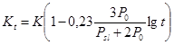
2.4. При отсутствии результатов полевого замачивания (п. 1.4) глубину Hmω области обильного водонасыщения (Sr ≥ 0,8) и глубину фронта увлажнения Hω следует рассчитывать по формулам
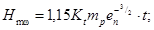
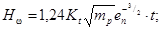
где Kt - согласно п. 2.3.
mp - коэффициент, учитывающий влияние размеров и формы источника замачивания, определяемый по обязательному приложению 3.
2.5. Влажность грунта в зоне неполного водонасыщения следует определять по формуле
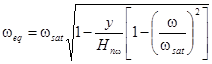
где Hnω = Hω - Hmω;
у - расстояние от границы зоны полного водонасыщения до плоскости, в которой определяется ωeq.
2.6. При расчете влажности для двухслойного основания, в верхней части которого создана подушка из уплотненного грунта в соответствии с п. 3.17, следует определять глубину контура увлажнения Нω по формуле (3), принимая Hmω=hn, а влажность грунта ниже подушки следует определять по формуле (4).
2.7. Ширину зон растекания B’ω с каждой стороны увлажненного контура следует определять по формуле
B’ω = Ψ (hω + Hk), (5)
где Ψ - коэффициент, характеризующий размеры источника увлажнения, равный 1,5 - для каналов с расходом до 2,0 м3/с и равный 2,0 - для каналов с большим расходом.
2.8. Статические расчеты просадочных оснований гидротехнических сооружений должны производиться:
по первому предельному состоянию - по несущей способности грунтов основания, согласно указаниям СНиП 2.02.01-83, СНиП 2.02.02-85;
по второму предельному состоянию - по предельным деформациям с целью ограничения их значениями, обеспечивающими нормальную эксплуатацию возводимых сооружений. Расчет по деформациям является обязательным и сводится к проверке выполнения условия
S ≤ Su
где S - расчетная деформация основания;
Su - предельная деформация основания сооружения, определяемая по обязательному приложению 2.
2.9. Расчеты деформаций просадочных оснований ГТС оросительных систем следует выполнять по следующим формулам
S = Sp+Sω+Sn (6)
где S - расчетная деформация;
Sp - осадка под действием веса ГТС; расчет осадки выполняется согласно указаниям СНиП 2.02.01-83, СНиП 2.02.02-85;
Sω - деформация при увлажнении грунта;
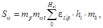
hi - толщина i-ого слоя грунта;
εslp - относительная просадочность грунта расчетного слоя при расчетном давлении должна определяться по результатам компрессионных испытаний по формуле
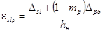
Δрб - деформация образца при предварительном обжатии его давлением равным природному;
Δsl - деформация образца после замачивания его при расчетном давлении;
hн - начальная высота образца, равная высоте кольца компрессионного прибора;
mp - коэффициент, учитывающий гистерезис деформаций грунта определяемый по обязательному приложению 3;
mδ - коэффициент, учитывающий формоизменение (горизонтальные деформации) грунта в пределах сжимаемой зоны грунта под фундаментом при расчете деформации методом послойного суммирования согласно СНиП 2.02.01-83, СНиП 2.02.02-85 значения коэффициента mδ следует определять по обязательному приложению 3;
mp - коэффициент, учитывающий влияние размеров и формы объекта замачивания, определяемый по обязательному приложению 3;
mωt - коэффициент,
учитывающий длительность увлажнения грунта; 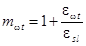 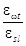
εωt - относительная послепросадочная сжимаемость грунта, определяемая по формуле
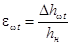
Δhωt - величина послепросадочной деформации образца при длительной фильтрации воды при сохранении расчетного давления;
Sn - деформация уплотнения подстилающих просадочную толщу пород.
Деформацию Sn следует учитывать для сооружений III и IV групп (табл. 2) при Hsl ≥ 10 м; mp ≥ 0,8; En ≤ 15 МПа; (Еn - модуль деформации подстилающей породы). Рассчитывать деформацию Sn рекомендуется как осадку условного фундамента с подошвой на уровне кровли этих пород, и с размерами в плане, соответствующими размерам призмы проседающего грунта. Дополнительная нагрузка под условным фундаментом складывается из веса возводимого сооружения и веса увлажняющей грунт воды.
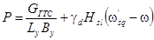
где GГТС - вес возводимого ГТС;
Ly, By - длина и ширина условного фундамента;
Ly = Lω+0,5lдз; By = Bω+0,5lдз
lдз - согласно п. 2.11;
ω’sq = 0,27.
2.10. Относительная просадочность грунта при его неполном водонасыщении должна определяться согласно СНиП 2.02.01-83.
2.11. Ширину зоны неравномерных деформаций грунта lд, в том числе за пределами площадки замачивания lдз и в ее пределах lав следует определять по формулам
lд = 2β (1+mp) Sω
lдз = β (2+mp) Sω (11)
lав = βmpSω
Число просадочных трещин - по формуле
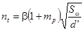
Величину вертикального сброса по просадочной трещине следует определять по формуле
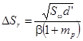
Угол наклона поверхности грунта на расстоянии l<lа от уреза воды следует определять по формуле
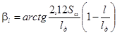
Неравномерность деформаций основания ГТС на участке с координатами l1 и l2 от линии уреза воды
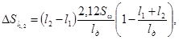
где
β = 3mp+8i (16)
mp - по обязательному приложению 3;
i - уклон рельефа.
3.1. При выборе метода устройства искусственных оснований гидротехнических сооружений оросительных систем на просадочных грунтах следует руководствоваться рекомендуемым приложением 4.
3.2. Метод создания искусственных оснований сооружений должен быть обоснован проработкой вариантов и сопоставлением технико-экономических показателей, для сооружений III и IV групп (табл. 2) и для групп однотипных сооружений с учетом их конструкций, инженерно-геологических и гидрогеологических условий их строительства и эксплуатации, имеющегося оборудования и продолжительности работ.
3.3. Предварительное замачивание оснований сооружений следует проводить, как правило, на всю глубину просадочной толщи, но не более 40 м. При проектировании предварительного замачивания расчетом определяют: величину просадки толщи просадочного грунта; продолжительность предварительного замачивания; необходимый объем воды.
3.4. Деформации толщи грунта в результате предварительного замачивания следует определять по формуле (7).
3.5. Деформации гидротехнического сооружения, построенного на предварительно замоченном основании, следует вычислять по формуле
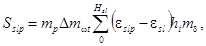
где mp, mδ - согласно обязательному приложению 3;
Δmωt - разность значений коэффициента mωt для рассматриваемого момента эксплуатации и для момента окончания предварительного замачивания.
Если значение Sslp превышает предельные деформации Sω по обязательному приложению 2, то предварительное замачивание должно быть продолжено или дополнено каким-либо другим способом упрочнения лессового грунта.
3.6. Минимальную продолжительность предварительного замачивания грунта без скважин следует определять по формуле (11), принимая Hmω=Hsl с учетом требований п. 1.4. При замачивании через скважину (п. 3.13) продолжительность замачивания должна быть уменьшена на 30-35 %.
3.7. Объем воды, необходимый для предварительного замачивания грунта, следует определять по формуле
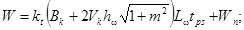
где Vk - поправка на боковое растекание воды, равная 1,4-1,5;
Wп - потери на испарение;
Kt - согласно п. 2.3.
3.8. Длина и ширина котлованов предварительного замачивания должны быть больше габаритов строящегося сооружения (кроме каналов) на 2-3 м в каждую сторону; глубина воды в котловане должна быть не менее 0,5 м.
3.9. Предварительное замачивание лессовых грунтов через траншеи следует предусматривать как правило при строительстве оросительной сети из трубопроводов и железобетонных лотков на средне- и сильно-просадочных грунтах на глубину не менее соответственно 10 и 15 м.
3.10. Замачивание лессового грунта под каналом прогоном воды следует предусматривать, как правило, если канал имеет расход до 5 м3/с и проходит по равнинной территории или по пологим склонам. Глубину воды, начиная с 30-40 см, следует повышать в течение трех суток до расчетной.
3.11. Для каналов с расходом более 5 м3/с, а также для всех каналов на сильнопросадочных грунтах и на косогорах замачивание грунтов следует предусматривать по отсекам или из пионерных траншей. Размыв отсеков (траншей) назначаются в соответствии с п.п. 4.4-4.7. Заполнение каналов водой осуществляется постепенно: начиная с глубины 30-40 см, горизонт воды повышается на 10-15 см в сутки до расчетного.
3.12. Предварительное замачивание грунта на обвалованных участках следует использовать при строительстве нескольких близко расположенных сооружений. Высота валов вокруг замачиваемого участка должна быть на 1 м больше уровня воды. Ширина валов поверху определяется условиями механизации работ, глубина воды 0,3-0,8 м.
3.13. Предварительное замачивание через скважины следует применять только при необходимости максимально сократить сроки строительства. Скважины должны буриться диаметром 15-20 см на расстоянии 4-7 м друг от друга, в зависимости от водопроницаемости грунтов. Глубина скважин должна быть на 3-4 м меньше мощности просадочной толщи; скважины следует заполнять дренирующим материалом (крупный песок, дресва, щебень, гравий, шлак и т.п.) причем верхние 1,5 м должны быть заполнены песком. Крайние ряды скважин следует располагать за пределами сооружения на расстоянии 1,5-3 м от кромки подошвы флютбета (фундамента). Вода в скважины должна подаваться осветленной. По окончании замачивания следует удалить дренирующий материал из верхней части скважин на глубину не менее 2 м и затампонировать их лессовыми грунтом.
3.14. Предварительное замачивание под нагрузкой следует предусматривать для плотин и других крупных сооружений. Толщина слоя дренирующего материала должна быть 40-50 см. На дренирующий материал должен укладываться грунт насыпи, являющийся дополнительной пригрузкой. Участок должен быть обвалован, к дренирующему слою должна быть подведена вода для замачивания лессовой толщи, причем должна быть предотвращена кольматация дренирующего материала. При необходимости сократить сроки строительства следует дополнительно предусмотреть устройство сети скважин в соответствии с указаниями п. 3.13.
3.15. В процессе предварительного замачивания должны вестись наблюдения за количеством подаваемой в грунт воды, деформациями и влажностью грунта.
3.16. В каждом котловане следует предусматривать установку 4-5 нивелировочных марок. Опорные репера для нивелирования должны быть размещены на расстоянии не менее 50 м от замачиваемой площади (нивелирование 4 класса, один раз в две недели). Замачивание следует вести до условной стабилизации, когда деформации поверхности в течение двух недель не превышают 1 см. В случае различия фактических и расчетных величин деформаций более чем на 25 % необходимо уточнение изысканий и проектных решений. По окончании замачивания следует предусматривать контрольное определение влажности грунта посредством бурения скважин на всю глубину промачиваемой толщи с отбором двух образцов через каждый метр, или с определением влажности радиоизотопным методом. Количество контрольных скважин определяется (с округлением) по формуле
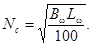
Предварительное замачивание должно обеспечить влажность лессового грунта в нижней просадочной толще не менее ωsq=ωp. После отбора образцов контрольные скважины следует тщательно тампонировать.
3.17. Для уточнения просадочных оснований сооружений оросительных систем следует использовать также подушки из уплотненного лесса. Размеры подушек должны обеспечивать уменьшение суммарных деформаций основания до предельных величин по обязательному приложению 2.
3.18. Для определения размеров подушки следует выполнить расчет просадки грунта природного сложения в соответствии с указаниями п. 2.9 и найти плоскость, ниже которой величина деформации равна предельной по обязательному приложению 2. Выше этой плоскости грунт необходимо уплотнить. Толщина подушки hп равна разности отметок выше подошвы флютбета (фундамента) сооружения и указанной плоскости. Со сторон, где к сооружению вода не подводится, ширину котлована следует выполнять на 3-4 м больше ширины сооружения. Со сторон верхнего и нижнего бьефов, а также на участках, где на расстоянии 3hп от сооружения могут находиться источники замачивания, длину котлована по дну следует принимать на 6 м больше длины сооружения, и располагать здесь съезды-выезды для механизмов. Минимальную ширину подушки выполняют на 3-4 м в каждую сторону больше ширины сооружения, а минимальную длину назначают по формуле
Ln = L+2B’ω (20)
где B’ω - по формуле 5.
3.19. Плотность грунта тела подушки должна обеспечивать полную ликвидацию его просадочных свойств при расчетных нагрузках, и должна назначаться в пределах 1,52-1,58 т/м3 для сооружений I и II групп по таблице 2, и в пределах 1,58-1,67 т/м3 для сооружений III и IV групп по таблице 2.
3.20. Комбинированные методы подготовки оснований следует, как правило, применять при строительстве ответственных сооружений на сильнопросадочных лессовых грунтах (см. рекомендуемое приложение 4).
3.21. Гидровибрационное уплотнение следует использовать для устройства в основаниях сооружений подушек толщиной от 3 до 10 м при наличии на участке строительства источника энергопитания мощностью 50-100 кВт и при дефиците воды.
3.22. Трамбование грунтов следует применять для устройства подушек толщиной 1,5-3,0 м, а также в комбинации с другими методами (например, с предварительным замачиванием). Вытрамбовывание следует применять при устройстве котлованов для опор железобетонных лотков, дюкеров, акведуков и других конструкций, имеющих небольшие размеры в плане. Контроль за качеством поверхностного трамбования осуществляется согласно СНиП 3.02.01-83.
3.23. Проектирование свайных фундаментов и их оснований должно производиться в соответствии со СНиП 2.02.03-85. Расчет по прочности конструкций свай и свайных ростверков, а также расчет свайных фундаментов по образованию и раскрытию трещин должен производиться по СНиП II-56-77. Допускается использование висячих свай для лотков акведуков, дюкеров, причем несущую способность висячих сваи определяют по результатам испытаний свай статической нагрузкой в соответствии со СНиП 2.02.03-85. Степень увлажнения грунта при этих испытаниях должна соответствовать ожидаемой при эксплуатации объекта.
Каналы. Основные требования
4.1. Открытые каналы оросительных систем на просадочных грунтах следует проектировать так, чтобы отметки уровней воды в них обеспечивали командование над орошаемыми полями после проявления просадочных и послепросадочных деформаций. При сравнении вариантов технических решений следует учитывать не только стоимость строительства с учетом противопросадочных мероприятий, но и стоимость дополнительных работ, связанных с ликвидацией последствий просадочных явлений, и величину эксплуатационных затрат и сельскохозяйственных ущербов, зависящих от надежности сооружений (п. 1.2).
4.2. Магистральные каналы, межхозяйственные и внутрихозяйственные распределители и сбросную сеть необходимо проектировать, как правило, в выемках. В проекте должны быть обоснованы целесообразность и вид противофильтрационных мероприятий по каждому крупному каналу и по группам внутрихозяйственных распределителей.
Каналы в земляном русле
4.3. Для каналов в земляном русле особое внимание следует уделять назначению оптимальных уклонов и скоростей течения воды, имея в виду недопущение размывов и образования незакрепленных перепадов на каналах, или их заиления.
4.4. Превышение верха дамбы над максимальным уровнем воды для каналов в полувыемке-полунасыпи и в насыпи следует определять по формуле
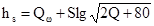
где Qω - нормативное превышение верха дамбы над максимальным уровнем воды согласно СНиП 2.06.03-85.
4.5. Для уменьшения объемов работ поперечное первичное сечение канала следует, как правило, разрабатывать с недобором, hн, согласно рис. 1.
4.6. При проектировании каналов с предварительным замачиванием грунта по отсекам, длину отсеков следует определять по формуле
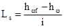
где hωf - глубина воды в канале при пропуске форсированного расхода;
hω - то же, при пропуске половины расчетного расхода;
i - уклон канала.
4.7. Требуемая глубина предварительного закачивания грунта для каналов с расходом до 1,0 м3/с и сооружений на них - не менее 20 м; для каналов с расходом более 1 м3/с - не менее 25 м (но не более мощности просадочной толщи).
4.8. Каналы в насыпи следует проектировать преимущественно на равнинных участках, где расчетные величины просадочных деформаций не более допустимых (обязательное приложение 2).
В противном случае необходимо предусматривать соответствующее упрочнение основания. Во всех случаях следует предусматривать требования по устройству качественной насыпи.
Рис. 1 Поперечное сечение каналов с недобором грунта
Рис. 2 Канал на косогоре.
4.9. Каналы на косогорах с поперечным уклоном более 0,1, сложенных просадочными грунтами, следует выполнять, как правило, в глубоких выемках с использованием мероприятий по п.п. 3.9, 3.11, 4.4-4.8. Параметры врезки в косогорах (рис. 2) следует назначать по формулам
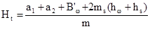
а2 = 0,85KiB’ω+Hpm1-hs(m1+m3) (25)
где Ki - коэффициент, учитывающий смещение фильтрационного контура
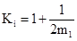
B’ω - согласно п. 2.7;
hs - согласно п. 4.4;
Нp - согласно п. 4.10.
4.10. Глубина Hp зоны, нарушенной трещинами, ходами землероев, псевдокарстовыми полостями, повышенной пористостью, засоленностью и т.п., должна определяться при инженерно-геологических изысканиях, в т.ч. с использованием геофизических методов (электроразведка, сейсморазведка) на всем протяжении косогорных участков канала. На предпроектных стадиях (ТЭО, схема) величину зоны Hр следует определять по формуле
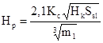
где Ssl - величина просадки грунта в м;
Hk - высота капиллярного поднятия воды в грунте в м;
Кс - коэффициент, учитывающий экспозицию косогора:
Кс = 1,2 для южной и юго-восточной экспозиции;
Кс = 1 для остальных случаев.
4.11. Верховой откос следует проектировать с заложением m1 = 0,1-0,2 при его высоте до 7 м. При высоте откоса более 7 м его следует выполнять ступенчатым с бермами шириной не менее 1 м через 5 м по высоте. Ширина бермы Q, назначается по формуле (24), а для каналов с расходом более 10 м3/с - из условия возможности проезда механизмов и складирования наносов, удаляемых из канала.
4.12. При поперечном уклоне косогора более 0,9 при расходе воды до 2 м3/с; более 0,8 при расходе воды до 5 м3/с, более 0,6 при расходе воды до 10 м3/с и более 0,5 при расходе воды свыше 10 м3/с, а также в случае значительной глубины нарушенной зоны, Hp строительство канала должно быть обосновано специальными технико-экономическими расчетами. В качестве альтернативных вариантов должны быть рассмотрены замена типа водопроводящего сооружения (лотки, трубы), или изменение трассы канала и др.
4.13. Предварительное замачивание грунта под каналом на косогоре следует предусматривать в соответствии с п.п. 3.11, 4.4-4.7. После проведения предварительного замачивания на косогорном участке канала должно быть предусмотрено устройство облицовки с противофильтрационным пленочным экраном, согласно п. 4.16, или устройство противофильтрационной завесы, согласно п. 4.14.
4.14. Для устройства завесы на низовом борту канала следует предусматривать устройство узкой траншеи или щели, заполненной уплотненным лессовым грунтом или смесями с применением бетонитов, битумов, причем могут использоваться струйные технологии и гидродинамическое резание грунтов или с экраном из полимерной пленки.
Глубина завесы должна определяться по формуле
hс = 2hω+Hp (28)
Каналы с облицовками
4.15. При проектировании облицовок каналов на средне- и сильнопросадочных грунтах необходимо предусматривать мероприятия для проявления основной части просадочных и послепросадочных деформаций, обеспечивающие остаточные деформации в соответствии с обязательным приложением 2. На слабопросадочных участках и грунтах I типа при проектировании облицовок необходимо предусматривать трамбование грунта на глубину не менее 1,5 м без предварительного замачивания. Предварительное замачивание должно назначаться по расчету, но не менее глубин, указанных в п. 4.7. После замачивания верхний слой грунта должен быть уплотнен: следует выполнить планировку откосов, подсыпку дамб.
4.16. В бетонопленочных облицовках каналов следует предусматривать использование стабилизированной полиэтиленовой или пластифицированной поливинилхлоридной пленки или других рулонных гидроизоляционных материалов под защитным слоем (например, из грунта, железобетонных плит, асфальтобетона, монолитного бетона). При использовании грунтопленочных и асфальтобетонных облицовок следует предусматривать обработку оснований гербицидами. Конструкции деформационных швов следует предусматривать с повышенной деформируемостью и водонепроницаемостью.
Лотковые каналы
4.17. Каналы в железобетонных лотках на просадочных грунтах следует проектировать с учетом допустимых величин деформаций оснований согласно обязательному приложению 2, предусматривая при необходимости упрочение оснований, а деформационные швы - с повышенной деформируемостью и водонепроницаемостью.
4.18. Железобетонные лотки на свайных опорах следует возводить на естественных основаниях только на просадочных грунтах I типа и на слабопросадочных грунтах при глубине забивки свай не менее 2,5 м. На средне- и слабопросадочных грунтах необходимо предварительное замачивание грунта, глубина забивки свай не менее 3,5 и 5 м.
4.19. Для стоечных опор в грунтовых условиях I типа и на слабопросадочных грунтах при мощности просадочной толщи не более 5 м следует предусматривать поверхностное трамбование тяжелыми трамбовками без предварительного замачивания. На средне- и сильнопросадочных грунтах следует использовать комбинированный способ подготовки основания предварительным замачиванием с последующим доуплотнением верхних слоев грунта тяжелыми трамбовками. Назначение этих мероприятий должно быть обосновано расчетом для однотипных на осваиваемой территории геологических условий и конструкций лотков с тем, чтобы их ожидаемые деформации не превышали приведенных в обязательном приложении 2.
4.20. Стыковые соединения лотков должны обеспечивать водонепроницаемость стыков при расчетных деформациях оснований, согласно обязательному приложению 2.
4.21. При уклонах более 0,05 рекомендуется применять глубокие лотки (до 160 см). При уклонах более 0,15 применять сборные лотки не следует.
4.22. Необходимо предусматривать планировку местности вдоль лотков и трубопроводов.
Трубопроводы оросительных систем
4.23. При выборе материала труб следует руководствоваться указаниями СНиП 2.06.03-85, СНиП 2.04.02-84 и требованиями настоящего раздела.
4.24. На грунтах I типа следует применять железобетонные и асбестоцементные трубы без предварительных противопросадочных мероприятий; допускается применение асбестоцементных и железобетонных труб повышенной на одну ступень марки, по сравнению с расчетной по условиям напора. Конструкции стыков раструбных и безраструбных труб должны обеспечивать поворот труб в месте стыка не менее чем на 2°. При величине ожидаемой просадки более 20 см допускается применять пластмассовые или стальные трубы с противокоррозионным покрытием.
4.25. Забор воды в трубопроводы из открытых каналов следует предусматривать специальными гибкими трубопроводами с учетом требований п. 4.22.
4.26. В местах установки гидрантов необходимо предусматривать уплотнение грунта на площади размером не менее 5×5 м и на глубину не менее 1,5 м.
4.27. В местах сопряжений трубопроводов оросительных систем с напорными трубопроводами насосных станций следует предусматривать компенсаторы деформаций.
Гидротехнические сооружения на каналах
4.28. При проектировании гидротехнических сооружений (ГТС) оросительных систем и выборе противопросадочных мероприятий следует руководствоваться классификацией ГТС по таблице 2 и рекомендуемым приложением 4.
4.29. Предельные величины деформаций просадочных оснований ГТС, при которых обеспечивается их пригодность к эксплуатации, следует принимать согласно обязательному приложению 2.
4.30. При проектировании ГТС на проселочном грунте основанием сооружения следует считать всю толщу просадочного грунта до глубины, где возможно его увлажнение и просадки, а в ряде случаев также часть подстилающих лессовую толщу пород (п. 2.9), и учитывать совместное воздействие основных взаимосвязанных разрушающих факторов: просадок и размывов грунта в основаниях и в бортах сооружений, а также суффозии.
4.31. При проектировании оросительных систем на просадочных грунтах следует предусматривать, на основе прогноза деформаций и размывов грунта (раздел 2), устройство (при необходимости) искусственных оснований (раздел 3), строительство гидротехнических сооружений противопросадочной конструкции (ГТС ППК), или сочетание этих мероприятий.
4.32. Следует использовать две основные схемы ГТС ППК: жесткую и гибкую. Жесткая схема целесообразна при больших поперечных размерах и малой длине сооружений, гибкая при их большой длине. При расходах воды до 6 м3/с следует применять, как правило, одноочковые трубчатые ГТС с диаметром трубы до 1,6 м. При расходах более 6 м3/с следует применять двух- и трехочковые гибкие ГТС или жесткие (с прямоугольными трубами или открытые доковые ГТС ППК).
4.33. ГТС ППК должны состоять из пространственно-жестких секций, представляющих функционально самостоятельные (аванкамера, оголовок, труба, водобой, слив) или совмещенные конструкции, и соединяемых деформационными швами, обладающими повышенной подвижностью и водонепроницаемостью и обеспечивающими безаварийную работу при расчетных деформациях.
4.34. Пространственная жесткость и прочность секций должна быть обеспечена в продольном направлении водопроводящим лотком (трубой), а в поперечном - диафрагмами, зубьями или ребрами жесткости. Конструкции секций следует рассчитывать на устойчивость и на прочность при самых неблагоприятных условиях опирания на основание. Для повышения подвижности, прочности и устойчивости конструкций ГТС ППК следует использовать компенсаторы деформаций, анкеры, соединительные тяги, ванты (шпренгели), дополнительные фиксированные опоры.
4.35. ГТС ППК необходимо проектировать с усиленной противоэрозионной защитой в виде диафрагм (шпунтов) и открылков оголовков в верхнем и нижнем бьефах. В случае устройства искусственного основания противоэрозионные диафрагмы следует проектировать так, чтобы они полностью находились в пределах искусственного основания.
4.36. В конструкциях ГТС ППК и облицовок, как правило, следует предусматривать деформационные швы оклеечного типа с увеличенным компенсационным провесом армогерметика, швы закладного типа или комбинированные. Стыки сборных элементов должны армироваться выпусками рабочей арматуры и быть равнопрочны со стыкуемыми железобетонными конструкциями.
4.37. У гибких ГТС ППК с водопроводящими круглыми трубами следует предусматривать подвижные стыки с расчетными зазорами для поворота и с защитой от раскрытия при деформациях. Стыки должны герметизироваться уплотнительными резиновыми кольцами и мягкой набивкой (пороизол, просмоленная пакля); зачеканка пазух стыка цементным раствором не допускается.
4.38. Проекты ГТС ППК должны предусматривать устройства для уменьшения неравномерности просадочных деформаций оснований (например, посредством их защиты от локального увлажнения или посредством равномерного их увлажнения через специальные отверстия и распределительные слой), или для последующей ликвидации неравномерных просадочных деформаций, заполнения просадочных полостей под флютбетами, и для выправления осадок и кренов отдельных частей сооружений.
4.39. Гибкие трубчатые ГТС ППК следует, как правило, выполнять сборными, а жесткие открытые и с прямоугольными трубами - из монолитного или сборно-монолитного железобетона. Применяемые сборные элементы должны представлять готовую объемную конструкцию или обеспечивать после монтажа получение пространственно-жесткой секции. Применяемые сборные элементы должны соответствовать унифицированной номенклатуре железобетонных конструкций для водохозяйственного строительства.
4.40. Расчетные деформации оснований не должны нарушать гидравлического режима сооружения. Требуемое превышение бортов сооружения над максимальным уровнем воды следует принимать на 10-15 см выше верха дамб (п. 4.4).
Таблица 2
|
Расчетный расход, воды м3/с |
Размеры фундаментов |
Давление под подошвой ф-та, МПа |
Относит. эксцентриситет нагрузки |
||||
|
площадь, м2 |
глубина, м |
отнош. сторон |
полное Р |
дополн. к прир. Рс |
|||
|
Водозаборные, перегораживающие, регулирующие, сопрягающие, водопроводящие, вододелительные, водовыпускные ограждающие сооружения, насосные станции, лотки, трубопроводы |
до 5 |
3-30 |
1-5 |
1,2-4,2 |
до 0,08 |
до 0,025 |
0-0,15 |
|
То же |
5-50 |
20-700 |
2-8 |
1,8-3,5 |
0,1-0,2 |
0,025-0,05 |
0,03-0,12 |
|
Опоры дюкеров, акведуков, насосные станции камерного типа, устои и бычки водозабора |
10-100 |
30-1000 |
3-16 |
2-4 |
0,13-0,21 |
0,05-0,15 |
0,07-0,2 |
|
Плотины, насосные станции блочного типа, башенные водозаборы, другие особо крупные сооружения или их части |
более 20 |
40-2000 |
до 20 |
2-5 |
более 0,18 |
более 1,5 |
0-0,15 |
4.41. Для сооружений, предназначенных к строительству на просадочных толщах мощностью более 10 м, где не ожидается подъем грунтовых вод до флютбета сооружения, не следует предусматривать устройство дренажей, гравийно-песчаных поденной, обратных фильтров и разгрузочных отверстий в флютбетах.
4.43. На прилегающих к сооружениям участкам каналов следует предусматривать, как правило, уширенные до 6-8 м бермы для размещения запасных материалов и механизмов при ремонтных работах.
4.44. На период пусковой эксплуатации должны быть предусмотрены систематические наблюдения за состоянием сооружений и развитием деформаций конструкций и оснований. Состав и продолжительность наблюдений устанавливается программой натурных наблюдений, включаемой в проект.
4.45. Оголовки и опоры дюкеров должны располагаться на упрочненных основаниях. Входные и выходные оголовки следует располагать на расстоянии не менее десяти диаметров трубы от поверхности склона на отметке подошвы сооружения.
4.46. Акведуки должны иметь конструкцию, позволяющую безаварийно воспринимать расчетные деформации лотки при расчетных смещениях опорных устоев и бычков. Конструкция пролетного строения должна, как правило, применяться балочная разрезная с деформационными швами согласно п.п. 4.33, 4.36.
4.47. Если расчетная величина деформаций просадочного основания не превышает предельных значений (обязательное приложение 2), ГТС ППК должны возводиться на естественном основании. В противном случае необходимо устройство такого искусственного основания, чтобы его деформации после постройки сооружения не превышали предельных значений (обязательное приложение 2). Предварительный выбор метода устройства искусственных оснований ГТС ППК на просадочных грунтах следует вести на основе рекомендуемого приложения 4. Окончательный выбор метода должен производиться на основании технико-экономических сопоставлений вариантов, с учётом класса, типа, конструкции, размеров и режима работы сооружений, инженерно-геологических условий строительства, наличии воды, механизмов, материалов, кадров и имеющегося опыта производства работ.
4.48. Строительство временных сооружений (для подачи воды для санитарно-бытовых или технологических нужд строительства предварительного замачивания, доведения грунтов до оптимальной влажности уплотнения, досрочного использования части орошаемых земель до полного завершения строительства системы) должно быть в каждом случае обосновано технико-экономическими расчетами.
4.49. Конструкции временных сооружений должны обеспечивать временный пропуск расходов и поддержание заданных уровней воды в условиях просадочных деформаций оснований; допускать перевозку, быстрый и легкий монтаж и ремонт, для чего следует применять легкие эластичные материалы, серийные и типовые изделия, гибкие соединения, компенсаторы, рихтовочные пазы и т.п. В случае использования ценных материалов (металл, пластмассы, ткани) должно быть обеспечено их многократное применение.
Расчеты гидротехнических сооружений
4.50. Расчеты размывов просадочных грунтов в руслах каналов и зонах влияния ГТС необходимо выполнять как при индивидуальном проектировании, так и при привязке типовых проектов. Допускаемые неразмывающие скорости течения воды следует определять в соответствии с указаниями СНиП 2.06.03-85.
4.51. Глубину hdsp воронки местного размыва в нижнем бьефе ГТС следует рассчитывать с использованием величины допускаемой неразмывающей скорости по формуле
hdsp = h-hс (29)
где hc - расчетная глубина воды в канале при равномерном режиме;
h - глубина потока в месте наибольшего размыва;
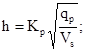 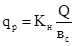
Q - расчетный расход воды, м3/с;
Vc - допускаемая неразмывающая скорость, м/с;
вc - ширина фронта схода, м;
Kн - коэффициент, учитывающий неравномерность удельного расхода воды по фронту схода; Кн=1,3;
Kp - коэффициент условий размыва, принимаемый равным 1,05 для случая, когда рисберма заканчивается ковшом, и 1,7, когда рисберма заканчивается уступом с вертикальной низовой гранью.
Ширину воронки местного размера в нижнем бьефе вdsp, а также глубину hvsp и ширину вvsp воронки местного размыва в верхнем бьефе ГТС следует определять по формулам
вdsp = Kghdsp; вvsp = Kghvsp; (31)
hvsp = (0,4+5εsli)hdsp
где Kg=2,2 для грунтов I типа по п. 1.10;
Kg=2,4 для слабопросадочных грунтов;
Kg=2,6 для среднепросадочных грунтов;
Kg=2,85 для сильнопросадочных грунтов.
εsli - относительная просадочность грунта при давлении 0,1 МПа.
4.52. Глубину и ширину противоэрозионных диафрагм ГТС следует назначать по соответствующим размерам воронок местных размывов, с увеличением на 30 % для заделки краев диафрагмы в грунт.
4.53. Фильтрационные расчеты просадочных оснований ГТС следует вести с учетом требований СНиП 2.02.02-85, СНиП 2.06.01-86. Для ГТС, I, II и III групп по табл. 2, характеризуемых отношением длины к напору более 5, имеющих расчетные противоэрозионные диафрагмы, при толщине слоя просадочного грунта более 10 м, где не ожидается подъем грунтовых вод до уровня флютбета, фильтрационные расчеты допускается не выполнять.
4.54. Расчетные деформации гибких ГТС ППК (SГТС) следует определять для условий неравномерных деформаций просадочных оснований, с учетом предельных прогибов труб за счет их шарнирных соединений; предельных кренов и взаимных смещений частей ГТС ППК по подвижным стыкам и деформационным швам; ресурсов компенсирующих устройств ГТС ППК. Предельные величины деформаций оснований Su следует принимать по обязательному приложению 2. Расчетная деформируемость SГТС гибких ГТС ППК должна быть не менее SГТС ≥ 1,35 Su.
4.55. Расчеты устойчивости следует выполнять как для системы «сооружение-основание», так и для отдельных элементов ГТС ППК, с учетом величины и неравномерности распределения деформаций просадочного основания. Расчеты устойчивости конструкций ГТС ППК следует вести согласно СНиП 2.02.02-85, СНиП 2.06.01-86, СНиП II-55-79, по первой группе предельных состояний (полная непригодность к эксплуатации). Расчет устойчивости по сдвигу следует вести по схеме плоского сдвига (грунт в основании и бортах увлажнен, вода в канале отсутствует).
4.56. Необходимо выполнять, дополнительно к требованиям СНиП II-55-79, расчеты устойчивости конструкций ГТС ППК по опрокидыванию при наличии в канале воды и при неравномерном увлажнении основания, развивающемся со стороны бьефов. Если устойчивость конструкций ГТС ППК на просадочном основании не обеспечивается, расчетами должны быть определены величины требуемых удерживающих усилий и назначены конструктивные мероприятия, обеспечивающие устойчивость конструкций ГТС ППК, согласно п. 4.34.
4.57. Расчеты общей прочности пространственно-жестких конструкций ГТС ППК следует вести для двух направлений - вдоль и поперек потока, с учетом величины и неравномерности просадочных деформаций основания, на основные сочетания нагрузок постоянные, временные длительные и кратковременные нагрузки и воздействия согласно СНиП 2.01.07-85, СНиП 2.06.01-86, СНиП II-55-79, СНиП II-56-77, СНиП 2.03.01-84, по первой группе предельных состояний, активное, пассивное и дополнительное (навал) боковое давление грунта определяются методами теории предельного равновесия грунтов с учетом сцепления и трения по расчетной поверхности с использованием расчетных характеристик грунтов и материалов.
4.58. Расчет прочности жесткого ГТС ППК в направлении вдоль потока следует вести для докового лотка как для системы балок-стенок, при неравномерных просадках основания, развивающихся со стороны бьефов и вызывающих зависание концов сооружения; размеры опорного участка следует определять из сопоставления суммы нагрузок и расчетного давления на грунт. На действие наибольшего изгибающего момента следует рассчитывать центральное поперечное сечение, на действие наибольшей поперечной силы - наклонное сечение, восходящее от границы расчетного опорного участка.
4.59. Расчет прочности жесткого ГТС ППК в направлении поперек потока следует вести как для рамы, нижний ригель которой лежит на упругом основании, для двух случаев: при непрерывном по длине контакте сооружения с основанием (рядовой участок), и при неравномерных просадках основания (опорный участок). Для рядового участка следует рассматривать два основных случая (при заполнении лотка водой и отсутствии давления грунта на стенки, и наоборот), и учитывать дополнительное боковое реактивное давление (навал) грунта, определяемое расчетом сооружения во взаимодействии с упругой средой. На опорном среднем участке плиты (являющейся днищем водобойного колодца) действуют наибольшие усилия, передаваемые балкам - стенками лотка. Расчет опорного участка требуется вести при заполненном водой лотке и при действии на стенки лотка давления грунта. Расчет реактивных давлений грунта, изгибающих моментов и поперечных сил для плиты следует вести как для балки на упругом основании, расчет прочности наклонных сечений - с учетом разгружающего влияния реактивного давления грунта.
4.60. Высота ребра жесткости сопрягающей стенки должна определяться из условия безаварийного сопряжения с противоэрозионной диафрагмой при их расчетном смещении. Расчет прочности ребра жесткости сопрягающей стенки следует вести с учетом возможности зависания одного из открылков оголовка, или зависания центра стенки на концах открылков, с учетом веса конструкций, воды и вертикальных составляющих давления грунта.
4.61. Расчет прочности и прогибов противоэрозионных диафрагм следует вести для случая одностороннего бокового давления грунта со стороны основания сооружения, при образовании воронки размыва со стороны канала, как для плиты, опертой по трем сторонам, с трапециедальным (по вертикали) распределением нагрузки.
Грунтовые сооружения
4.62. При проектировании грунтовых плотин, насыпей, каналов, дамб обвалования и т.п., для которых лессовые просадочные грунты являются материалом или основанием, следует руководствоваться указаниями глав СНиП 2.01.07-85; СНиП 2.06.04-82; СНиП 2.06.05-84; СНиП 2.02.01-83; СНиП 2.06.05-84; СНиП II-7-81; СНиП 2.06.01-86; СНиП 2.02.02.85, СНиП 2.06.03-84; СНиП III-8-76 и положениями настоящего раздела.
4.63. Возводить насыпи (плотины) допускается без упрочнения основания, если величина ожидаемой просадки не превышает предельной Su по обязательному приложению 2. При ожидаемых просадках, превышающих Su, основания плотин необходимо предварительно замачивать на полную глубину просадочной толщи, или применять комбинированные способы упрочнения оснований, согласно п.п. 3.1; 3.2; 3.12; 3.13; 3.14; 3.16. В основании качественной насыпи во всех случаях должен быть удален растительный или выветрелый слой и уплотнен грунт на глубину не менее 1 м.
4.64. В местах сопряжения тела насыпи с берегами оврагов и саев необходимо производить глубокую врезку, особо качественное упрочнение основания, укладку и уплотнение грунта. Для сопряжения плотин с бортами глубина врезки противофильтрационного элемента должна быть не менее 0,12 от наибольшей глубины воды перед плотиной, размер врезки в борта в плане не менее 1,5lds, где lds - по формуле (11). Необходимо предусматривать усиленную систему сбора и отвода ливневых вод и защиту от размыва откосов плотины и мест примыкания плотины к бортам балки.
4.65. При подготовке оснований под ответственные насыпи удаление просадочных грунтов на глубину значительного их нарушения землероями, корнями растений и эрозионными процессами трещинами, остатками старых сооружений, или в случае их высокой пористости, или при содержании легкорастворимых солей в количествах, превышающих допустимые по п. 4.66, должно быть обосновано соответствующими технико-экономическими расчетами.
4.66. При использовании лессовых грунтов для возведения гидротехнических насыпей и в их основаниях содержание в них водорастворимых солей должно ограничиваться в соответствии с указаниями СНиП 2.06.05-84.
4.67. На просадочных основаниях следует, как правило проектировать плотины однородные или с ядрами, или с гибкими экранами и диафрагмами из полимерных материалов; конструкции из жестких материалов должны применяться только при соответствующем обосновании.
4.68. При строительстве насыпей на просадочном основании следует применять такие способы, которые позволяют обеспечить, наряду с требуемой плотностью, повышенную пластичность тела насыпи: отсыпку лессового грунта в воду, гидронамыв, комбинацию этих способов (отсыпку сухого грунта в прудки предварительно намытого грунта), или уплотнение грунта при влажности на 1-2 % больше оптимальной.
4.69. При возведении насыпей способом отсыпки в воду или гидронамыва следует использовать лессовые грунты гранулометрического состава в соответствии с рекомендуемым приложением 5.
Время полного размокания грунта, определенное стандартным способом, не должно превышать 10 минут.
4.70. При использовании намыва для строительства сооружений из лессовых грунтов следует ограничивать интенсивность возведения сооружения по высоте, в зависимости от гранулометрического состава грунта и технологии ведения работ, наличия строительных дренажей.
Общее положение
5.1. Подготовка орошаемых полей должна, как правило, выполняться одним из двух методов: 1 - методом предварительного замачивания земель в строительный период; 2 - методом постепенного замачивания земель в процессе поливов сельскохозяйственных культур по бороздам с использованием в первые 3-5 лет передвижных разборных трубопроводов. Выбор метода должен быть обоснован технико-экономическим расчетом. На слабопросадочных и I типа грунтах, а также при поливе дождеванием с оптимальными нормами, при котором не допускается транзитная фильтрация, предварительное замачивание полей допускается не проводить.
5.2. Предварительное замачивание поля должно осуществляться путем полива по бороздам. Вода подается с помощью оросительной сети с гибкими передвижными поливными трубопроводами. Продольный (вдоль распределительного трубопровода) уклон поверхности поля для проведения таких поливов должен быть в пределах 0,002-0,03. Поливные борозды для проведения замачивания выполняются глубиной 15-20 см и длиной 60-120 м с шириной междурядий 60 см.
5.3. Глубина предварительного замачивания должна устанавливаться проектом с учетом свойств грунтов и способа полива, но не менее 5 м для среднепросадочных и не менее 6 м для сильнопросадочных грунтов.
5.4. Количество необходимой для замачивания воды (нетто) следует определять по формуле
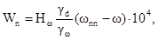
Обозначения - согласно справочному приложению 1.
5.5. Сброс воды при замачивании не допускается. Замачивание должно вестись непрерывно.
5.6. Продолжительность предварительного замачивания поля следует определять по формуле
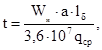
где Wn - объем воды, подаваемой на замачивание, м3/га;
a - ширина междурядья, м;
lδ - длина борозды, м;
qср - средний за период замачивания расход воды, подаваемой в борозду, м3/с. Значения qср для лессовых грунтов, имеющих коэффициент фильтрации 0,6-0,8 м/сут, следует принимать по таблице 3, а для других грунтов - пропорционально изменению коэффициента фильтрации.
Таблица 3
|
Средний расход в борозду qср, л/с/10-3 м3/с |
|||
|
длина борозды, м |
|||
|
lδ=60 |
lδ=90 |
lδ=120 |
|
|
0,005-0,01 |
0,12 |
0,18 |
0,24 |
|
0,01-0,02 |
0,08 |
0,12 |
0,16 |
|
0,02-0,03 |
0,06 |
0,09 |
0,12 |
5.7. Расходы воды в начале полива следует устанавливать так, чтобы время добегания струи до конца борозды, не превышало 6 часов при первом поливе и 2 часов при последующих поливах; при этом эрозионный размыв грунтов не допускается.
5.8. В начале предварительного замачивания подачу воды следует проводить с интервалами через одну борозду в течение 2-3 суток; затем в течение 2-3 суток полив по сухим (пропущенным) бороздам, и далее полив по всем бороздам до увлажнения грунта на расчетную глубину. При необходимости следует сделать перерыв в замачивании, ремонтную планировку и нарезку борозд, и продолжить замачивание.
5.9. Предварительное замачивание поля следует проводить поэтапно, по отдельным картам. Для этого поливной участок разбивается на карты шириной 100-125 м, площадью 5-7,5 га.
5.10. Контроль глубины промачивания и развития просадочных деформаций следует осуществлять на характерных участках поля и на участках, где имеются карстовые воронки, трещины, частые ходы землероев, неуплотненные насыпи.
5.11. Для выравнивания глубины промачивания следует проводить культивации на участках, где глубина промачивания меньше, и нарезать там более глубокие борозды-щели.
5.12. На просадочных грунтах следует применять, как правило, такие способы орошения и технику полива, которые не вызывают транзитной фильтрации и размывов грунтов.
5.13. При подготовке полей методом постепенного замачивания в процессе поливов сельскохозяйственных культур, в первые 3-5 лет орошения на грунтах I типа, слабо- и среднепросадочных в строительный период необходимо предусматривать капитальную планировку на основе топографической съемки. В первые 3-5 лет орошения (до завершения просадочных деформаций) следует ежегодно проводить эксплуатационную планировку и предпосевное выравнивание полей длиннобазовыми планировщиками. После завершения просадочных деформаций при необходимости следует выполнять капитальную планировку на основе повторной топографической съемки.
5.14. При проектировании закрытых оросительных систем на сильнопросадочных землях освоение следует предусматривать в 2 этапа. На I этапе освоения, в первые 3-5 лет, следует применять передвижную внутрихозяйственную оросительную сеть, состоящую из уложенных на поверхности поля разборных распределительных трубопроводов с гидрантами и передвижных поливных полиэтиленовых шлангов. Разборные распределительные трубопроводы следует прокладывать параллельно проектным трассам закрытых распределительных трубопроводов на расстоянии 5-10 м от них. На II этапе разборную сеть разборных распределительных трубопроводов (шлангов) перемещают на новый участок, а взамен строят: для полива пропашных культур - полустационарную оросительную сеть с поливным и полиэтиленовыми шлангами, для полива многолетних насаждений - закрытую оросительную сеть c подземными поливными трубопроводами.
5.15. Расстояние между передвижными трубопроводами и длину борозд, а также расход поливной струи на первом этапе освоения следует принимать в соответствии c данными рекомендуемого приложения 6. На втором этапе освоения расходы воды и длины борозд могут быть увеличены.
5.16. На средне- и сильнопросадочных грунтах при проектировании закрытых трубопроводов следует предусматривать как правило предварительное замачивание их оснований на глубину не менее соответственно 10 и 15 м, а глубину закладки труб следует принимать с запасом на среднюю величину планировок орошаемого поля, которую допускается принимать равной половине максимальной расчетной просадки.
5.17. При подготовке полей методом постепенного замачивания в процессе поливов в первые 3-5 лет объем ежегодных планировочных работ на просадочных орошаемых землях следует принимать равным объему локальных просадок, соблюдая равенство объемов срезки и подсыпки, по формуле
Vпр=VεslHωAm1m2 (34)
где Vпр - объем ежегодных планировочных работ, м3;
Нω - средняя глубина промачивания просадочной толщи, м, ориентировочно после 1 года орошения Нω=6-8 м; после 2 лет Hω=11-13 м; после 3 лет Hω=15-19 м; после 4 лет Hω=18-23 м; после 5 лет Hω=23-30 м;
А - площадь орошаемого поля, м2
m1 - коэффициент, учитывающий проявление локальных просадок по площади орошаемого поля (табл. 4);
m2 - коэффициент, учитывающий зависимость объемов просадок от величины абсолютной просадки в центре блюдца, его формы и размеров (табл. 5);
V - коэффициент статистической изменчивости (коэффициент вариации), изменяющийся от 1,50 до 1,80;
εsl - относительная просадочность лессового грунта.
Таблица 4
|
Категория исходного рельефа |
Значения коэффициента m1, по годам орошения |
|||||
|
1 |
2 |
3 |
4 |
5 |
||
|
Слабо-просадочный |
Очень сложный и сложный |
0,25 |
0,10 |
0,05 |
0,0 |
0,0 |
|
Средний сложности и спокойный |
0,20 |
0,05 |
0,0 |
0,0 |
0,0 |
|
|
Средне-просадочный |
Очень сложный и сложный |
0,35 |
0,30 |
0,20 |
0,10 |
0,0 |
|
Средний сложности и спокойный |
0,30 |
0,25 |
0,20 |
0,10 |
0,0 |
|
|
Сильно-просадочный |
Очень сложный и сложный |
0,50 |
0,40 |
0,30 |
0,25 |
0,05 |
|
Средней сложности и спокойный |
0,40 |
0,35 |
0,25 |
0,20 |
0,01 |
|
Примечание: При подсчете объема просадок отдельного просадочного блюдца коэффициент m1 следует принимать равным 1.
Таблица 5
|
Категория исходного рельефа |
Значение коэффициента m2 по годам орошения |
|||||
|
1 |
2 |
3 |
4 |
5 |
||
|
Слабо-просадочный |
Очень сложный и сложный |
0,38 |
0,40 |
- |
- |
- |
|
Средней сложности и спокойный |
0,40 |
0,42 |
- |
- |
- |
|
|
Средне-просадочный |
Очень сложный и сложный |
0,29 |
0,32 |
0,38 |
0,50 |
- |
|
Средней сложности и спокойный |
0,36 |
0,44 |
0,50 |
0,60 |
||
|
Сильно-просадочный |
Очень сложный и сложный |
0,28 |
0,30 |
0,32 |
0,36 |
0,40 |
|
Средней сложности и спокойный |
0,29 |
0,32 |
0,38 |
0,40 |
0,50 |
|
Директор института Н. С. Гришенко
«Союзгипроводхоз»
Руководитель темы С. С. Савватеев
зав. ЛНИ, к.т.н.
Справочное
1. В просадочном основании ГТС могут проявляться деформации следующих видов:
осадка под влиянием нагрузки от сооружений при практически неизменной влажности грунта;
просадка - уплотнение вследствие нарушения структурной прочности грунта при совместном воздействии нагрузки и увлажнения; следует различать собственно просадку, при давлении от собственного веса грунта и дополнительную просадку при воздействии веса сооружений;
послепросадочные деформации грунта - суффозионно-пластическое уплотнение при длительной фильтрации воды через грунт.
2. Величина просадки - вертикальное перемещение поверхности грунтового массива при его просадке под действием собственного веса или собственного веса и дополнительной нагрузки от сооружений.
3. Относительная просадочность - относительная величина просадочной деформации слоя (образца) грунта при заданном давлении и замачивании.
4. Начальное просадочное давление грунта - наименьшее уплотняющее напряжение, при котором начинают проявляться просадочные свойства грунта при его водонасыщении.
5. Начальная влажность просадки грунта - наименьшая влажность, при которой начинают проявляться просадочные свойства грунта, при данном напряжении.
Основные обозначения
Характеристики грунтов
ρ - плотность грунта
ρd - плотность сухого грунта
ρδ - плотность частиц грунта
γ - удельный вес грунта
γd - удельный вес сухого грунта
γδ - удельный вес частиц грунта
en - коэффициент пористости
n - пористость
Co, Csl, Cωt - удельное сцепление грунта при природной влажности, при просадке и при послепросадочной консолидации
φo, φsl, φωt - угол внутреннего трения грунта при природной влажности при просадке и после просадочной консолидации
ω - природная влажность
ωp - влажность на границе пластичности (расшатывания)
ω1 - влажность на границе текучести
ωsl - начальная просадочная влажность
ωeq - конечная (установившаяся) влажность
ωnn - предельная полевая влажность
ωsat - влажность, соответствующая полному водонасыщению
Sp - степень влажности
Ip - число пластичности
εsl, εslp - относительная просадочность при природном и расчетном давлении
εωt - относительная послепросадочная деформация
εp - относительное сжатие при природной влажности
εsl1 - относительная просадочность грунта при давлении 0,1 МПа
К - коэффициент фильтрации
Kδ - коэффициент фильтрации в вертикальном направлении
Кг - коэффициент фильтрации в горизонтальном направлении
Psl - начальное просадочное давление
E - модуль деформации
Eω - модуль деформации грунта в увлажненном состоянии
Hk - высота капиллярного поднятия
Деформации
S - расчетная величина ожидаемой деформации основания сооружения
Su - предельная величина деформации основания сооружения
Sp - осадка грунта постоянной природной влажности под дополнительной нагрузкой от сооружения
Ssl - просадка при природном давлении
Sω - деформация просадочного основания ГТС при увлажнении
Sωt - послепросадочная деформация
Sslp - деформация ГТС, построенного на предварительно замоченном основании
Sn - деформация уплотнения подстилающих просадочную толщу пород
Геометрические характеристики
L, B - длина и ширина сооружения
Lω, Bω - длина и ширина источника увлажнения
lk, вk - длина и ширина котлована по дну
d - глубина рассматриваемого слоя грунта от естественной поверхности
d’ - условная глубина (d’=1 м)
hs - требуемое превышение верха дамб над проектным горизонтом форсированного расхода воды
Нsl - толщина слоя просадочных грунтов
Hω - глубина увлажненного контура грунта за расчетный промежуток времени
Hmω - мощность зоны полного водонасыщения
hω - глубина воды у сооружения
hi - мощность расчетного слоя просадочной толщи
hn - толщина подушки из уплотненного лесса
m - заложение откоса
Другие характеристики
γω - удельный вес воды
p - среднее давление под подошвой сооружения
Рv - дополнительное вертикальное давление под подошвой сооружения
Pa - атмосферное давление
σ - нормальное напряжение
σг - вертикальное напряжение полное
σву - то же, от собственного веса грунта
t - продолжительность увлажнения грунта
tps - продолжительность предварительного замачивания грунта.
Обязательное
|
№№ пп |
Тип и характеристика сооружений |
Предельная величина просадочной деформации основания Su, см |
Предельная величина послепросадочной деформации |
|
1. |
Каналы без облицовки в выемке |
||
|
2. |
Каналы без облицовки в полувыемке и в насыпи с расходом воды до 2 м3/с |
30 |
30 |
|
2-5 м3/с |
25 |
20 |
|
|
5-10 м3/с |
20 |
20 |
|
|
более 10 м3/с |
15 |
15 |
|
|
3. |
Каналы с облицовкой монолитным бетоном, железобетоном, или железобетонными плитами |
12 |
12 |
|
4. |
Каналы с бетонопленочными или асфальтовыми облицовками |
15 |
20 |
|
5. |
Каналы с грунтовопленочными экранами или с облицовкой рулонными материалами |
20 |
30 |
|
6. |
Каналы в железобетонных лотках |
5 |
7 |
|
7. |
Напорные трубопроводы закрытых оросительных систем: |
||
|
а) асбестоцементные, железобетонные |
10 |
12 |
|
|
б) стальные и из полимерных материалов |
30 |
30 |
|
|
8. |
Насосные станции блочного и камерного типов, докеры, акведуки |
8 |
8 |
|
9. |
Подкачивающие насосные станции, водозаборные, перегораживающие, регулирующие, сопрягающие, водопроводящие, вододелительные, водовыпускные, ограждающие, переездные сооружения типовой конструкции |
10 |
10 |
|
10. |
Те же сооружения противопросадочной конструкции (п.п. 4.31-4.42) |
40 |
35 |
|
11. |
Земляные сооружения, удерживающие напор до 1 м |
45 |
35 |
|
до 5 м |
25 |
20 |
|
|
до 20 м |
20 |
15 |
|
|
более 20 м |
15 |
15 |
Примечания.
1. Величины Su определены из условий прочности, устойчивости, работоспособности сооружений и должны быть уменьшены, когда это требуется особыми условиями работы сооружений (отметки, уклоны, наполнение, пропускная способность, водонепроницаемость).
2. При использовании малоэффективных способов герметизации деформационных швов величина Su снижается в 1,5 раза.
3. При отсутствии прогнозов развития деформаций во времени или сведений о работе сооружений-предшественников, допускается условно принимать, что просадки происходят в течение первого года эксплуатации сооружения, а послепросадочные деформации в течение следующих пяти лет.
4. Требования к точности планировки и предельные величины деформаций орошаемых полей принимаются, в зависимости от сельскохозяйственного назначения, способа и техники полива в соответствии с указаниями соответствующих норм.
5. Величины Su для производственных и гражданских зданий и сооружений в зонах влияния оросительных систем принимаются согласно СНиП 2.02.01-83.
Обязательное
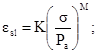
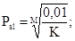 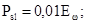 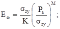
ωsl = ωp; σzy = γd;
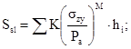
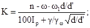 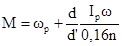
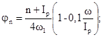 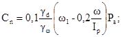
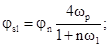 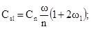
φωt
= φn(1-K); 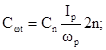
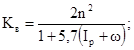
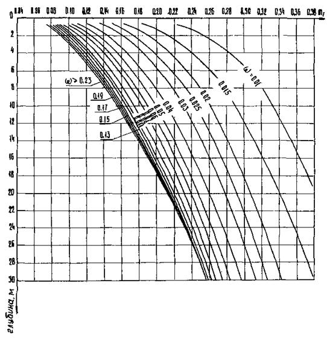
Рис. 1. Значение коэффициента m1, учитывающего гистерис деформаций грунта
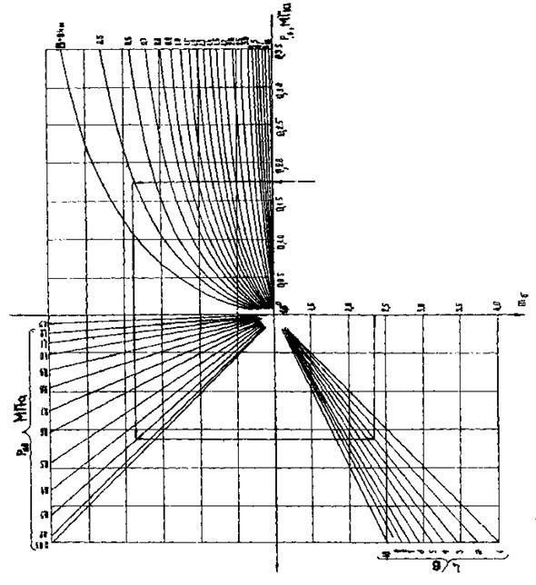
Рис. 2. Значение коэффициента mδ, учитывающего формоизменение грунта под фундаментом
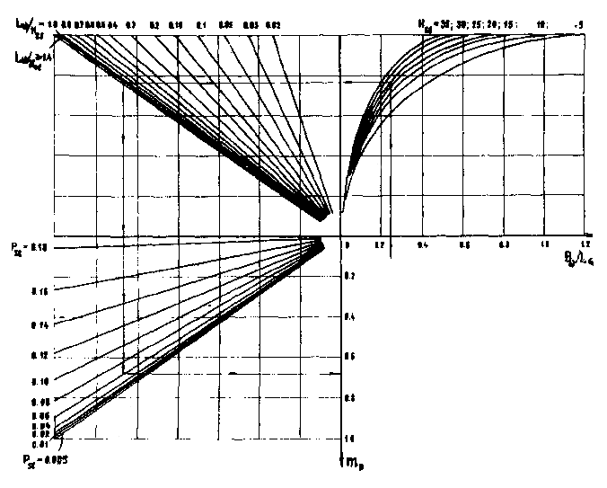
Рис. 3. Значения коэффициента m1, учитывающего размеры и форму объекта замачивания
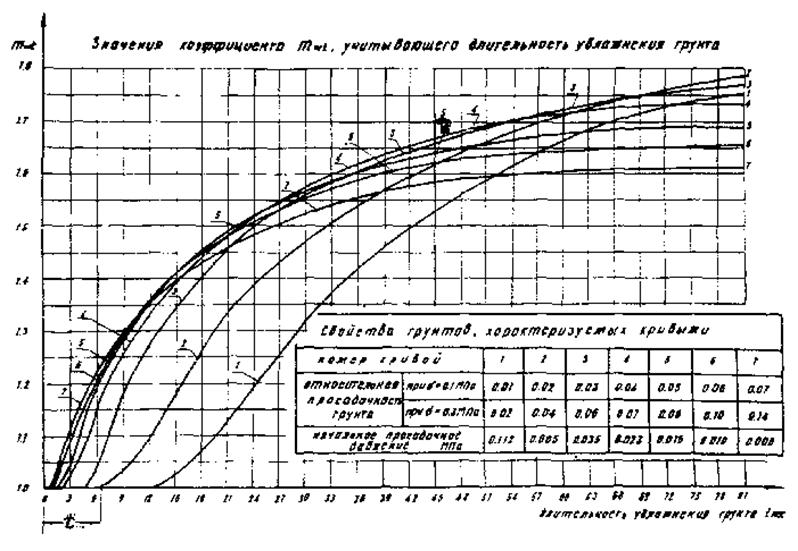
Рис. 4. Значение коэффициента mωt, учитывающего длительность увлажнения грунтов t
Рекомендуемое
|
Метод |
Примерная стоимость упроченного грунта, руб/м3 |
Рекомендуемые области применения |
|||
|
Мощн. просад. толщи, м |
Ожидаемая просадка грунта, см |
Объекты строительства |
Давление под фундаментом, МПа |
||
|
Уплотнение грунтов |
|||||
|
Предварительное замачивание |
0,2-0,4 |
15-40 |
более 30 |
Все ГТС, кроме отдельно стоящих опор и особо ответственных сооружений |
до 0,5 |
|
Трамбование |
0,3-0,4 |
до 5 |
до 15 |
Все ГТС |
до 0,1 |
|
Гидровибрация |
0,6-0,8 |
до 8 |
до 30 |
-«- |
до 0,15 |
|
Замена грунта (подушки) |
0,8-0,10 |
до 30 |
до 50 |
-«- |
до 0,2 |
|
Комбинированные методы |
|||||
|
Предварительное замачивание и подушка |
0,9-1,2 |
10-40 |
более 50 |
-«- |
до 0,2 |
|
Предварительное замачивание и трамбование |
0,5-0,7 |
8-40 |
более 50 |
все ГТС |
до 0,15 |
|
Предварительное замачивание, трамбование и подушка |
1,2-1,5 |
15-40 |
более 50 |
все ГТС кроме каналов |
до 0,15 |
|
Предварительное замачивание, взрывы |
0,7-1,2 |
15-40 |
более 50 |
все ГТС |
до 0,1 |
|
Предварительное замачивание, гидровибрирование |
0,8-1,4 |
6-40 |
более 30 |
все ГТС кроме каналов |
до 0,1 |
|
Трамбование, подушка |
1,0-1,3 |
5-10 |
20-50 |
-»- |
до 0,25 |
|
Предварительное замачивание с пригрузкой |
0,9-1,2 |
15-40 |
более 40 |
Грунтовые сооружения |
до 0,25 |
|
Сваи |
50-100 (для свай) |
более 5 |
более 15 |
Опоры лотков, дюкеров, акведуков, мостов, крупные промышленные и гражданские объекты и ГТС |
до 0,5 |
|
Закрепление грунтов |
|||||
|
Силикатизация, электросиликатизация, смолизация |
15-80 |
до 15 |
более 20 |
Особо ответственные ГТС, промышленные и гражданские здания, восстановление аварийных объектов |
более 0,3 |
|
Термическое, термохимическое |
20-40 |
-«- |
-«- |
-«- |
|
Рекомендуемое
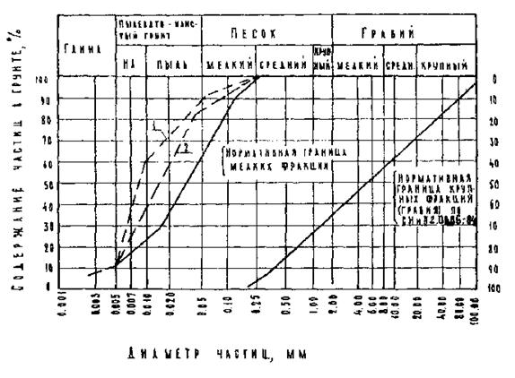
1 -
допускаемая граница мелких фракций при
возведении насыпей отсыпкой в воду;
2 - допускаемая граница мелких фракций при возведении насыпей гидронамывом
Рекомендуемое
|
Этапы освоения |
Уклон поливных |
Расход поливной струи, л/с |
Длина борозд, м |
|
|
максимальный |
минимальный |
|||
|
Легкие лессовидные суглинки |
||||
|
I |
0,01 |
0,15 |
0,075 |
80-100 |
|
0,02 |
0,10 |
0,05 |
70-90 |
|
|
II |
0,01 |
0,25 |
0,125 |
150-200 |
|
0,02 |
0,15 |
0,075 |
150-170 |
|
|
Лессовидные супеси |
||||
|
I |
0,01 |
0,25 |
0,125 |
80-90 |
|
0,02 |
0,15 |
0,075 |
70-80 |
|
|
II |
0,01 |
0,30 |
0,15 |
150-170 |
|
0,02 |
0,20 |
0,10 |
150-160 |
|
СОДЕРЖАНИЕ